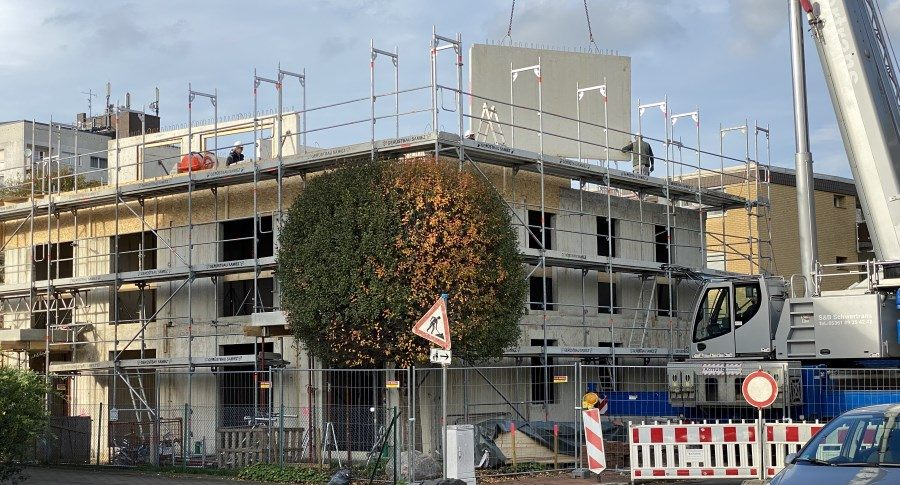
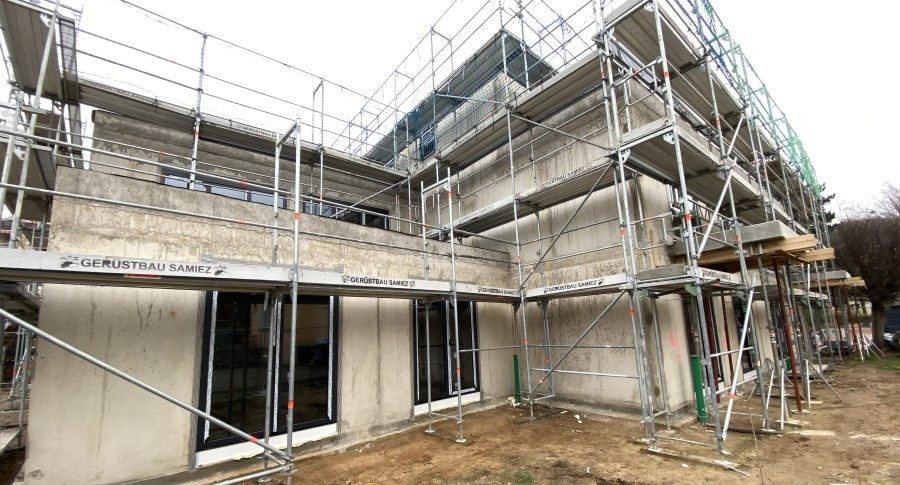

„Noch“ nennen wir es einfach Bauen 4.0.
Die einzelnen Techniken sind für sich nicht neu. Aber das Zusammenspiel und das Zusammensetzen der einzelnen Fertigungsschritte haben uns zu einem Umdenken veranlasst – und zu einer Weiterentwicklung des seriellen Bauens.

Das Verfahren
Was Bauen 4.0 für uns ist
Wie gebaut wird
- Einbau vorproduzierter Betonwände – je nach Erfordernis bewehrt oder sogar unbewehrt
- Je nach Möglichkeit direkt auf der Baustelle produziert, etwa mit einem WandModulToaster (WMT)
- Einbau vorproduzierter Betondecken
- Keine herkömmliche Sohlplatte, sondern eine Dämm- und Sauberkeitsschicht
- Fast ausschließlich mineralische Baustoffe
Was das bringt
- Weniger CO2 in Produktion und Transport
- Kürzere Bauzeiten, weniger Personaleinsatz
- Geringere Herstellungs- und Entsorgungskosten
- Vorproduktion und Aufstellung unabhängig vom Wetter, unabhängiger von Konjunkturschwankungen
- Besinnen auf die notwendige Technik – und Reduzieren unnötiger, kostenintensiver Technik bei gleichem Komfort
- Erreichen der Förderprogramme von KfW, BAFA und DENA
Projekt BCK09
Vom ersten Wandelement zum Rohbau: 75 Tage.
75Tage, massive Bauweise
Neubau eines Mehrfamilienhauses. Start am 22. September 2020, Stand am 6. Dezember 2020: Rohbau mit Fenstern fertig – das sind 2 Monate und 14 Tage.
1 Bauherr · 5 Bauarbeiter · 1 Architekt





Nicht nur Wohnen
Projekt SHWPK: Gewerbe- und Industriebau
Dieselbe Bauweise, anderer Einsatzbereich. Vom Rohbau aus vorproduzierten Elementen bis zum fertigen Innenausbau.


Einsatzbereiche
Im gesamten Wohnungsbau, im Büro- und Verwaltungsbau sowie im Gewerbe- und Industriebau. Vornehmlich im Neubau – aber auch in Sanierung und Modernisierung umzusetzen.
Es wird in näherer Zukunft das serielle Bauen und insbesondere den mehrgeschossigen Wohnungsbau verändern.
Berichte
Darüber wurde berichtet
- 2021 Bauen 4.0 – wie das Architekturbüro STILxArchitektur mit Revit neue Wege geht Customer Success Story, Contelos / Autodesk
- 10 / 2021 Bauen 4.0 erfordert detaillierte Vorplanung Allgemeine Bauzeitung
- 12 / 2021 Digitale Tools ermöglichen innovatives Bauverfahren AutoCAD-Magazin